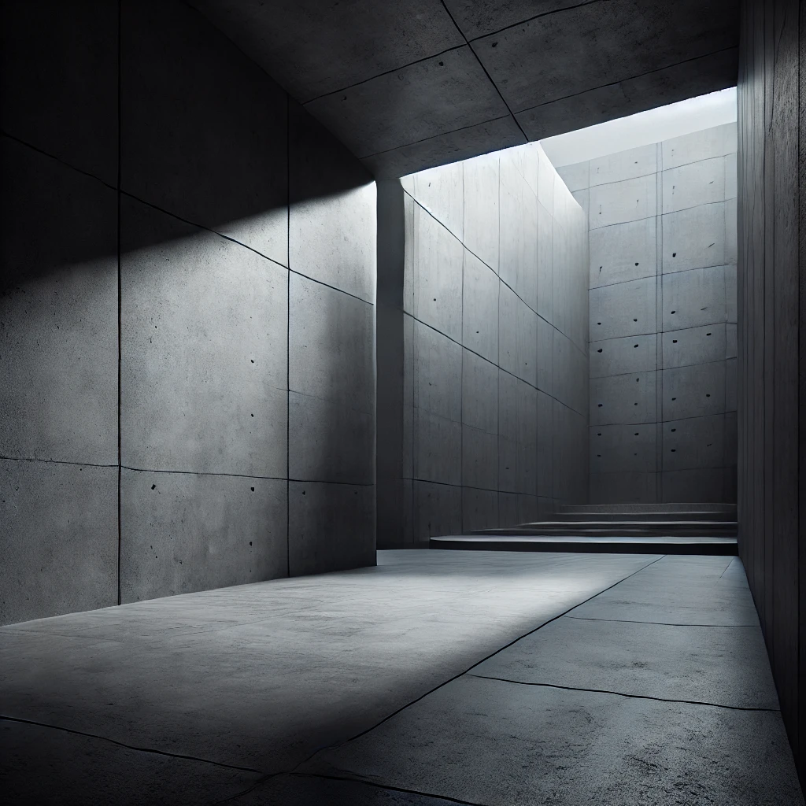

Vide
Voir du vide ?
Plus de vide
Search for stuff
Go
Et bah non il n'y a rien. Ce site est vide aprés tout.
Void
Home
Du vide ?
Bienvenue dans quelque chose.
Info
Voici une carte OpenStreetMap intégrée
Voir plus de chose ?
© Copyright: 2024 Void.
Droits réservés… ou pas ?
Ce site est tellement vide que même les cookies n’ont rien à grignoter. Mais bon, si vous trouvez quelque chose d’intéressant, faites comme chez vous. Juste, n’oubliez pas de fermer la porte en sortant.
Politique de confidentialité
RGPD
Cookie
Contact et liens
A props
Concept
Finir la visite ?
Veuillez regarder mon site sur un ecran plus grand
 Void
Void